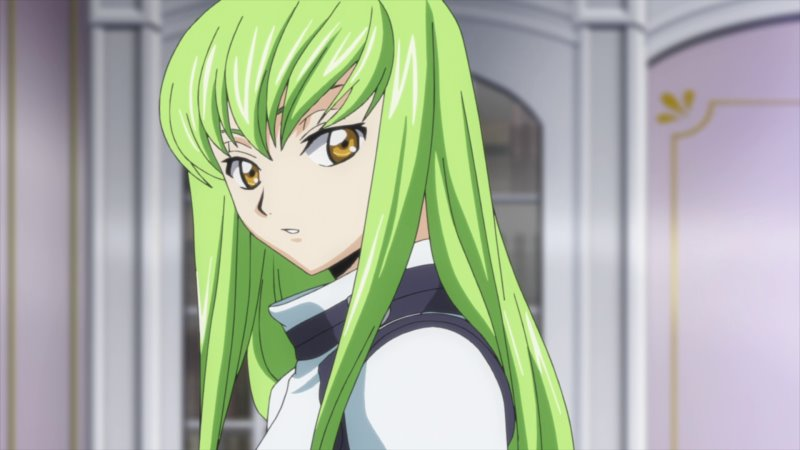
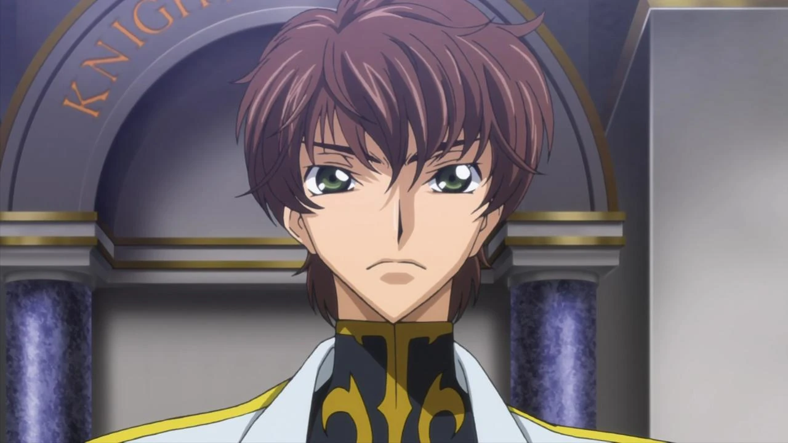
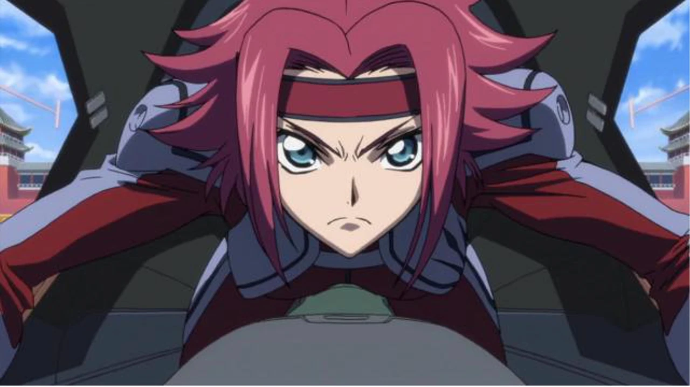
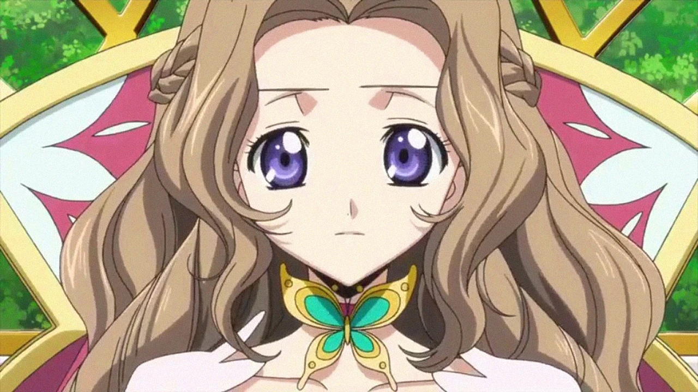

Introduction
Welcome to the thrilling world of Code Geass, an anime series that has captivated the hearts and minds of viewers worldwide. Designed for the discerning 18 to 24-year-old audience, Code Geass presents a gripping narrative filled with complex characters, thought-provoking themes, and intense mecha battles. Get ready to delve into a world where power, politics, and personal sacrifice collide in a tale that will leave you questioning your own values and beliefs.
Plot
Code Geass is set in an alternate timeline where the Holy Britannian Empire dominates the world with its military might and oppressive rule. The story revolves around Lelouch vi Britannia, a brilliant and enigmatic young man who obtains the power of Geass—a supernatural ability that allows him to command anyone to obey his orders without question. With this newfound power, Lelouch takes on the alter ego of "Zero" and leads a resistance movement known as the Black Knights, aiming to overthrow Britannia and create a better world for his sister Nunnally.
Main Characters
| Code Geass Cast |
|
|
 |
 |
 |
Lelouch vi Britannia (Zero): The charismatic and cunning
protagonist of the series. Lelouch possesses the power of Geass and uses his
tactical genius to orchestrate elaborate plans and manipulate those around
him. His determination, intelligence, and unwavering love for his sister
drive him to challenge the Britannian Empire. |
C.C.: A mysterious immortal girl who grants Lelouch the
power of Geass. C.C. becomes Lelouch's confidante and partner, offering
guidance and support throughout his journey. Her calm demeanor and enigmatic
past add depth to the storyline. |
Suzaku Kururugi: Lelouch's childhood friend and a skilled
pilot in Britannia's military. Suzaku believes in changing Britannia from
within and seeks justice through lawful means. His contrasting ideologies and
complex relationship with Lelouch create significant conflict throughout the
series. |
|  |
 |
|
Kallen Kozuki: A member of the Black Knights and an
exceptional Knightmare Frame pilot. Kallen fights fiercely for justice and the
liberation of Japan from Britannia's rule. Her unwavering loyalty and fierce
determination make her a formidable ally. |
Nunnally vi Britannia: Lelouch's younger sister, who
becomes a symbol of innocence and vulnerability. Nunnally's tragic
circumstances and her bond with Lelouch drive his motivations and actions
throughout the series. |
|
Summary of Arcs
The Black Rebellion Arc: Lelouch forms the Black Knights and begins his campaign against Britannia, aiming to free Japan from its oppressive rule.
The Battle of Narita Arc: The Black Knights engage in a high-stakes battle against Britannian forces led by Suzaku, testing Lelouch's strategic prowess and resolve.
The Kyoto Escapade Arc: Lelouch and the Black Knights face new challenges as they travel to Kyoto, seeking alliances and evading Britannian capture.
The Black Knights Betrayal Arc: Internal conflicts and betrayals threaten to tear the Black Knights apart, putting Lelouch's leadership and trust to the test.
The Geass Directorate Arc: Lelouch delves deeper into the mysteries of Geass while contending with powerful enemies within Britannia.
The Ragnarok Connection Arc: The series reaches its climactic finale as Lelouch's grand plan unfolds, leading to a world-altering confrontation between Lelouch and his adversaries.
Conclusion
Code Geass stands as a must-watch series for any fan of compelling storytelling, political intrigue, and mecha battles. Its intricate plot weaves together themes of power, morality, and the consequences of one's choices. Lelouch's transformation from an ordinary student to a revolutionary leader is a captivating journey that keeps you on the edge of your seat.
With its well-developed characters, intricate plot twists, and philosophical dilemmas, Code Geass offers a unique blend of action, drama, and psychological depth. It prompts viewers to question their own beliefs and moral boundaries, making it an intellectually stimulating experience.
Prepare to be enthralled by the clever strategies, emotional turmoil, and breathtaking battles that unfold throughout the series. Code Geass is a rollercoaster ride of emotions, leaving a lasting impact and sparking discussions long after the final episode. Embrace the power of rebellion, and immerse yourself in the gripping world of Code Geass—you won't be disappointed.